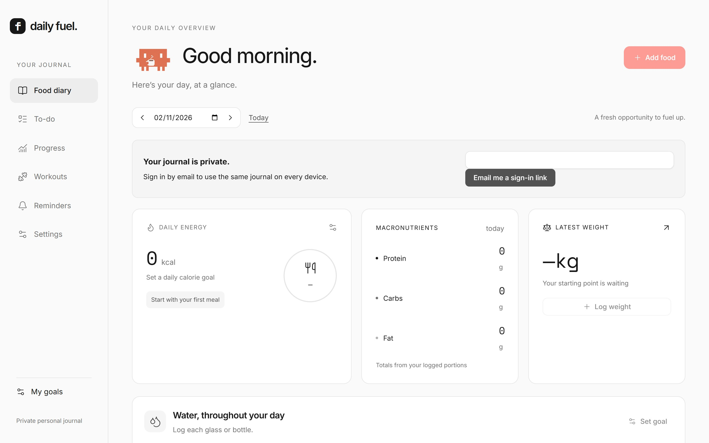

Thomaz
Barrago
Programador web júnior. Estudo Programação de Sistemas de Informação na Universidade de Leiria Oeste.
À procura de estágio para o 2.º semestre de 2026/27
Projetos web
Quatro sites que construí de raiz, do servidor ao ecrã.
-
MoonArrow Studios
Fórum e marketplace de assets para quem faz jogos, com painel de administração.
PHPMySQLBootstrapJavaScript
Ver projeto
-
DevDay
Planeador diário para programadores: lista e kanban, pomodoro e meteorologia.
JavaScriptFirebaseCSSGitHub Pages
Ver projeto
-
DailyFuel
Diário de calorias, peso e água, com lembretes para beber água e treinar.
Next.jsTypeScriptSupabaseCloudflare
Ver projeto
-
TelePomba
Chat em tempo real com conversas de grupo, contas e envio de ficheiros.
PHPNode.jsSocket.IOMySQL
Ver projeto
Outros projetos
Um projeto de equipa do CTeSP e dois projetos pessoais.
-

PetGestHotel
Hotel para animais: reservas num site, numa API e numa app Android, com chat entre cliente e colaborador. Equipa de 3, 2026.
Yii2PHPMySQLAndroid
Ver projeto -

Lux
Assistente de programação com IA que corre no próprio computador, através do Ollama, e pede autorização antes de cada alteração.
PythonJavaScriptOllama
Ver projeto -

Dreadware
Jogo de terror no Roblox que estou a fazer sozinho: reparar computadores para fugir antes que o tempo acabe.
LuauRoblox StudioRojo
Ver projeto
No 1.º ano do CTeSP fiz ainda, em dupla, duas aplicações desktop em C#: o SecureChat, um chat de grupo com mensagens cifradas, e o iShopping, uma lista de compras com orçamento mensal.
Estágios
Três estágios durante o secundário: dois em desenvolvimento web no Algarve e um Erasmus+ na Polónia.
-
2025
Maio a junho · 2 meses
Programador web
ByBruno Software · Portimão, remoto
Desenvolvi a secção de reservas de um site de alojamentos no Algarve: formulários, pagamentos e emails automáticos de confirmação.PHP, HTML, CSS, JavaScript, AJAX
-
2025
Abril a maio · 2 meses
Técnico de digitalização 3D
Fundacja Akcelerator Obywatelski Spark · Breslávia, Polónia · Erasmus+
Fotografei objetos com câmaras Nikon e transformei as fotografias em modelos 3D texturizados por fotogrametria.RealityCapture, fotografia, modelação 3D
-
2024
Maio a julho · 3 meses
Programador web
Logrise · Lagoa, presencial
Construí páginas em WordPress com Elementor e um plugin próprio que gera contratos e os exporta em PDF.WordPress, PHP, HTML, CSS, JavaScript, AJAX
Sobre mim
Comecei a programar no curso profissional de Programação de Sistemas de Informação, do 10.º ao 12.º ano. A minha PAP, o MoonArrow Studios, foi o primeiro projeto grande que fiz sozinho, da base de dados ao painel de administração, e teve 20 valores.
Hoje estou no 2.º ano do CTeSP em Programação de Sistemas de Informação, na Universidade de Leiria Oeste. Este semestre faço o PetGestHotel com dois colegas, em Yii2.
Já passei por três estágios: dois em desenvolvimento web no Algarve e um Erasmus+ na Polónia, a fazer modelos 3D por fotogrametria.
Fora das aulas faço as ferramentas de que preciso, como o DevDay e o DailyFuel, e estou a fazer sozinho um jogo de terror no Roblox.
Procuro um estágio onde trabalhe em produtos web reais, com uma equipa que reveja o meu código.
- Web
- HTML, CSS, JavaScript, PHP, AJAX, TypeScript, Next.js
- Dados
- MySQL, SQL Server, Firebase, Supabase, SQL
- Frameworks
- Yii2, Bootstrap, WordPress, Entity Framework
- Outras
- C#, Python, Luau, Git e GitHub
- Línguas
- Português, inglês
- 2025 a 2027
- CTeSP em Programação de Sistemas de Informação, Universidade de Leiria Oeste
- 2022 a 2025
- Curso profissional de Programação de Sistemas de Informação, ensino secundário
Disponível para estágio no 2.º semestre de 2026/27. Vamos conversar.
Também estou no LinkedIn e no GitHub.
- LinkedInlinkedin.com/in/thomaz-barrago
- GitHub pessoalgithub.com/ThomazCortez
- GitHub do cursogithub.com/ThomazCortezESTG
- LocalizaçãoLeiria, Portugal